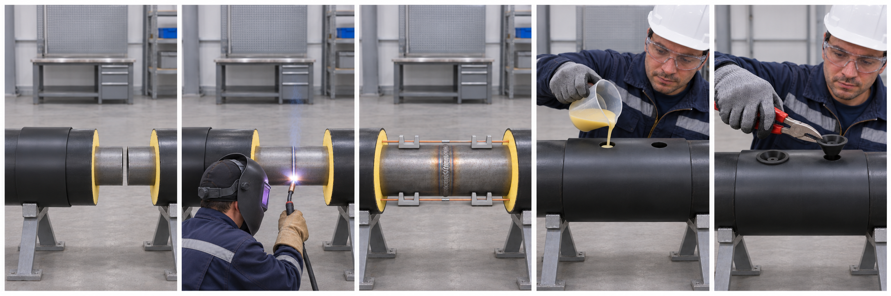
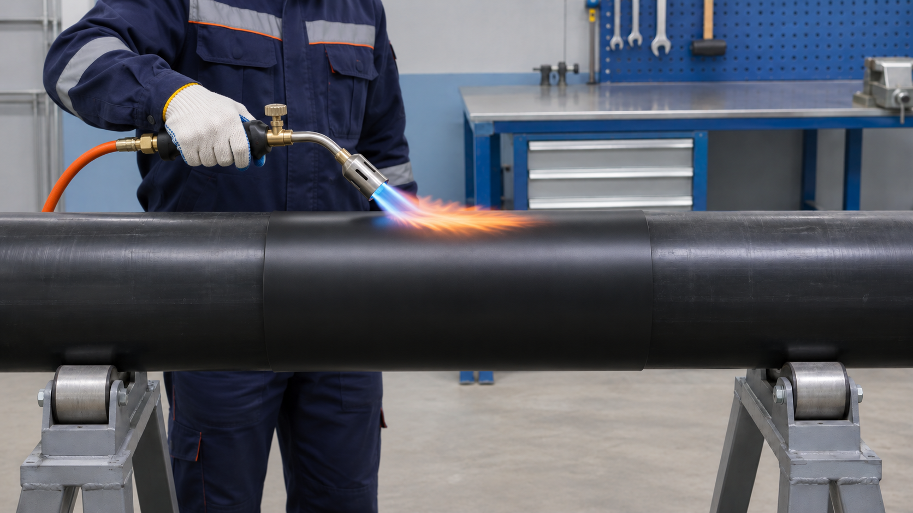

Самый ответственный полевой узел
КЗС — это не «пена и муфта», а восстановление заводской системы на стыке
До сварки стальной несущей трубы гладкую муфту уже надевают на одну ППУ-трубу и отводят от зоны стыка. После сварки восстанавливают СОДК, теплоизоляцию и герметичную оболочку.


Контрольная точка перед заливкой: остывание муфты → опрессовывание → устранение негерметичности → повторная проверка → только затем смешивание А + Б.
Три проверяемые функции
| Тепло | Полость между сталью и муфтой заполняется расчётным объёмом ППУ-смеси. |
|---|---|
| Герметичность | Усаженная муфта и термоклей до заливки проходят проверку давлением; после заполнения стык закрывают заваренные пробки. |
| Контроль | Два проводника СОДК соединены гильзами и проходят посередине толщины ППУ на 12 и 6 часах. С каждой стороны шва провод опирается на отдельный держатель. |
Логика монтажа, которую должен понимать менеджер
- До стыковки надеть гладкую муфту на одну ППУ-трубу и отвести её по оболочке от зоны будущей сварки. На муфте ещё нет отверстий и выступающих элементов.
- Совместить и сварить стальную несущую трубу. Муфта в этот момент остаётся на оболочке в стороне; полиэтиленовую оболочку не сваривают вместе со сталью.
- После сварки соединить тонкие проводники СОДК обжимными гильзами. Слева и справа от шва установить по держателю на 12 и 6 часах: основанием на стальную трубу, длина основания — около двух высот; провод проходит посередине толщины ППУ.
- Установить термоклей по краям оболочек, затем сдвинуть ранее надетую гладкую муфту на стык и отцентрировать её.
- Равномерно усадить установленную муфту открытым пламенем газовой горелки. Температуру, расстояние, скорость перемещения пламени и контроль усадки брать из действующей инструкции.
- После полного остывания муфты просверлить в ней ровно два отверстия 25 мм. Через одно отверстие выполнить проверку герметичности: в учебном примере Saverhot — давление 0,3 бар с выдержкой 5 минут. При падении давления найти место мыльным раствором, повторно прогреть и повторить испытание; параметры конкретного КЗС брать из его действующей инструкции.
- Только после успешной проверки герметичности объединить компоненты А + Б в ёмкости, закрыть и взболтать строго по инструкции конкретного комплекта.
- Залить через одно отверстие, оставив второе для выхода воздуха; установить вентиляционные пробки рифлёной ножкой вниз.
- Неглубокую коническую пробку греть отдельно от стыка: широкий бортик сверху, узкий конец в чашке. Перенести плоскогубцами, вставить узким концом вниз и сплавить с муфтой.
Это не технологическая карта. Температуры и время прогрева муфты, пропорции компонентов, подготовка поверхностей и контроль берутся только из действующей инструкции КЗС.
Что не забыть в запросе
- Наружный диаметр оболочки, тип муфты, длина зоны стыка.
- Расчётный объём заливки и температурные условия работ.
- Термоклей, гильзы, держатели СОДК, оба типа пробок, газовая горелка, опрессовщик, завариватель и прочий инструмент по инструкции.
Дополнительный отраслевой материал: пенопакет, монтаж термоусадочной муфты. Комплектность сверять только с карточкой КЗС ТИК.